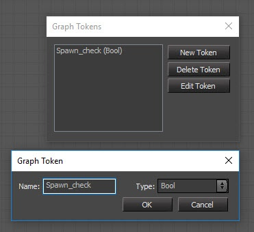
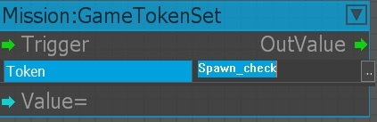
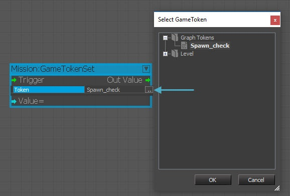

Обзор
А Графовый токен — это переменная, которая используется для хранения значений и последующего повторного использования этих значений в одном и том же графике.
Эти токены можно использовать для выполнения простых логических манипуляций и проверок в сценарии графа потока.
Графовые токены в действии
Графовые токены в Flow Graph Редактор имеют много общего с Игровые жетоны. Они могут иметь одинаковые типы переменных и даже отображаться под CVar. команда gt_show=1 вместе с остальными игровыми жетонами.
Обычно они используются для передачи различных переменных в очень большом графе и для уменьшения необходимости в дополнительных соединениях узлов потока.
Создание токенов графа и доступ к ним в Flow Graph
В этом уроке мы создадим собственный графический токен, который проверяет, появился ли игрок в игре или нет. Затем мы воспользуемся проверкой, чтобы увидеть значение токена графика и отобразить это значение на экране.
- В Flow Graph выберите Инструменты -> Редактировать токены графика.
- В Графовые токены окно, нажмите Новый токен для создания нового токена. Введите новое имя токена и выберите тип данных, который будет использоваться:

- Используйте Миссия:GameTokenSet (или другие узлы потока миссии), чтобы установить/получить/откорректировать значение токена графа.
- Дважды щелкните тот Токен порт для ввода желаемого токена. Обязательно увеличьте масштаб узла, прежде чем нажимать на него double.

Вы также можете использовать Обзор кнопку, чтобы выбрать сохраненный токен.

Он проверяется при запуске (в том же кадре), и значение отображается как 1 при использовании представления отладки игрового токена gt_show=1.
5. В консоли введите "gt_show=1" и переключитесь в игровой режим, чтобы увидеть изменение значения жетона.
Дополнительная информация и полезные переменные
- Токены графа являются локальными только для графа потока, в котором они существуют.
- Объект ID хранит блок-график, вам необходимо установить <графид> значение (88 выше).
- gt_show Значение="1": Показывает состояние игрового токена и графического токена (1 экран и журнал, только 2 экрана и только 3 журнала).
- gt_showFilter Значение="": Строка фильтров для игровых токенов и графических токенов.
- gt_showLines Значение="25": Определяет общее количество строк для отображения.
- gt_showPosX Значение="0": Местоположение на экране для отображения по оси X (слева направо).
- gt_showPosY Значение="0": Местоположение на экране отображается по оси Y (вверх вниз).